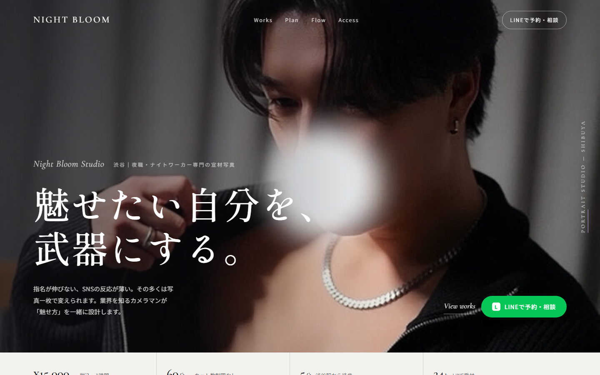
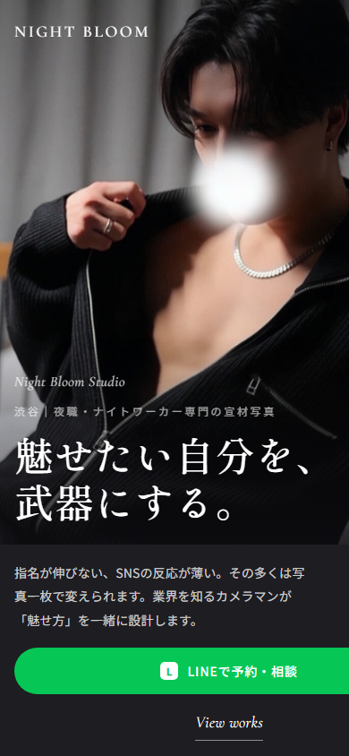
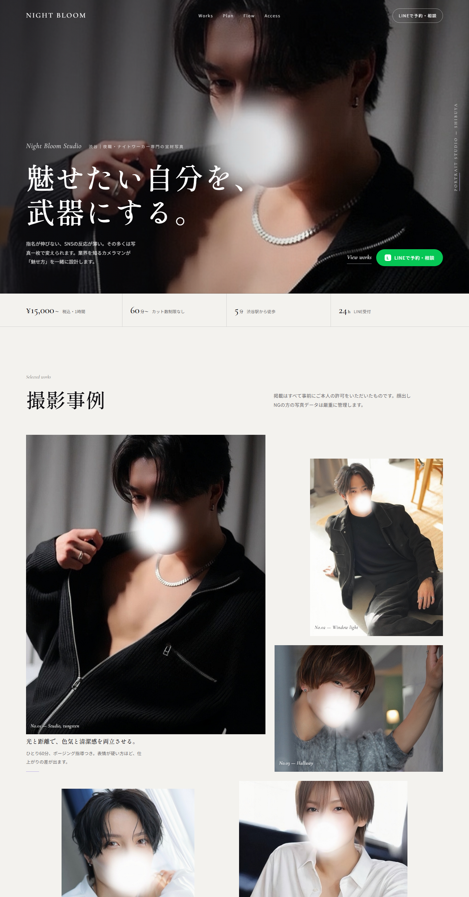
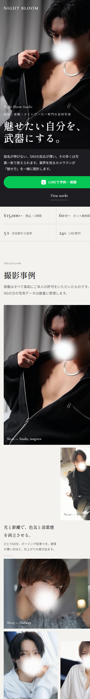
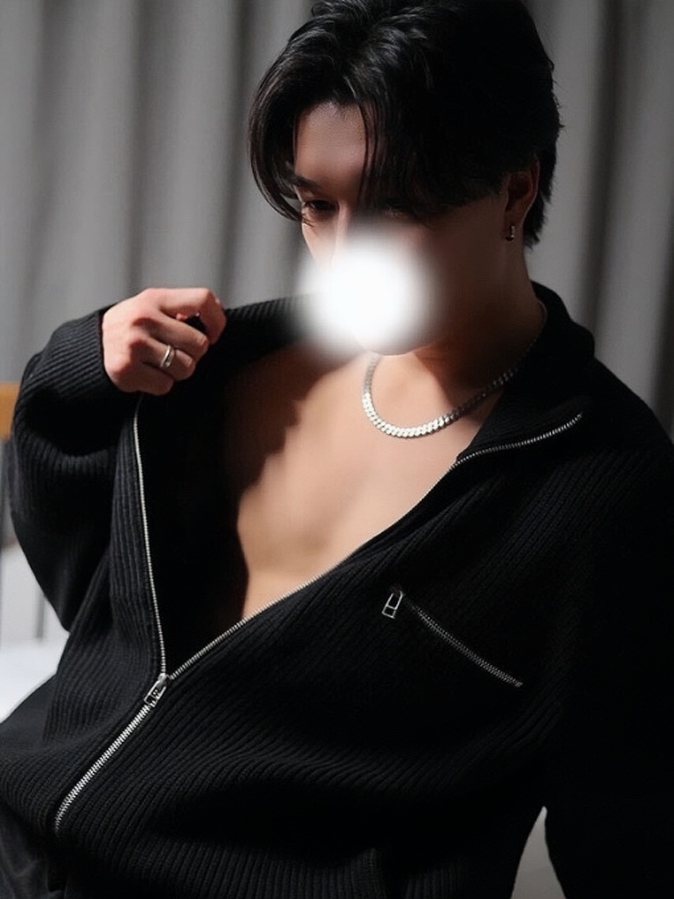
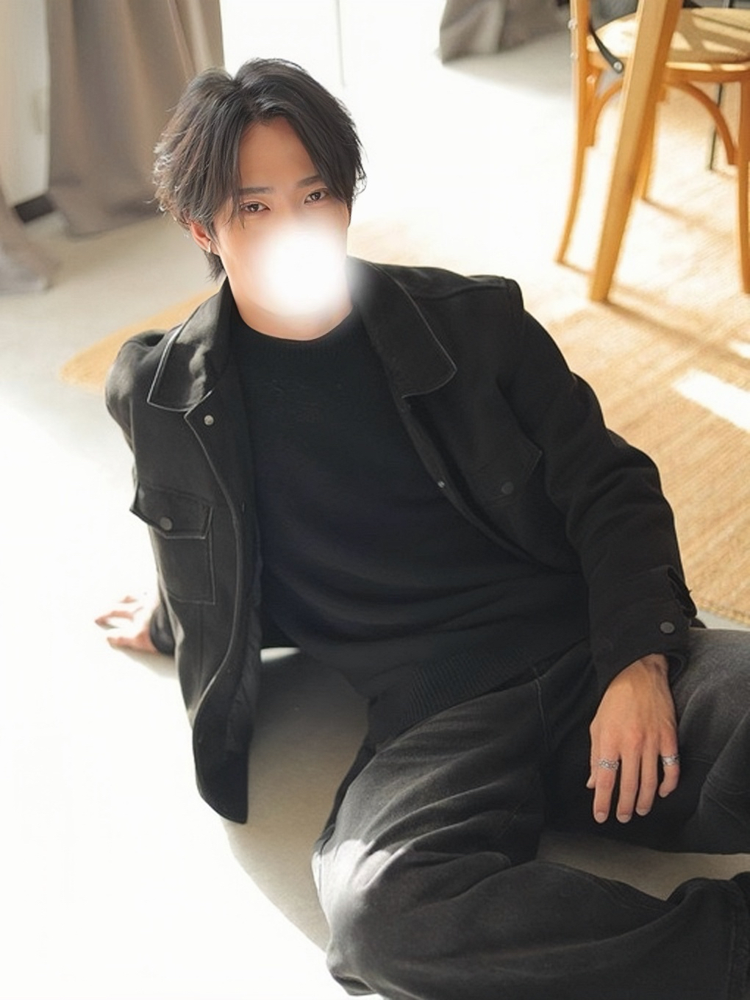
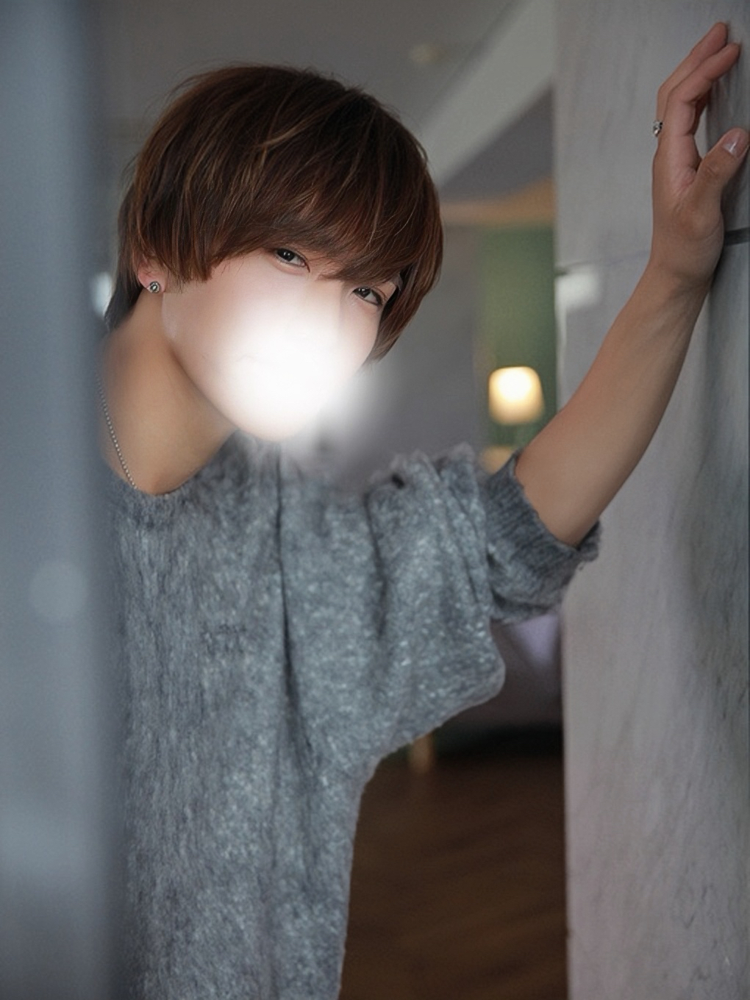
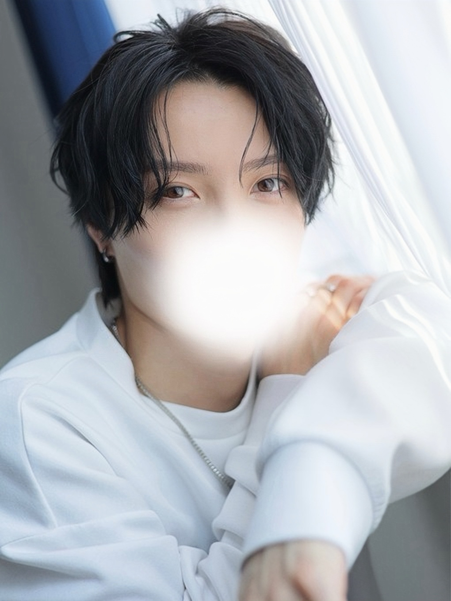
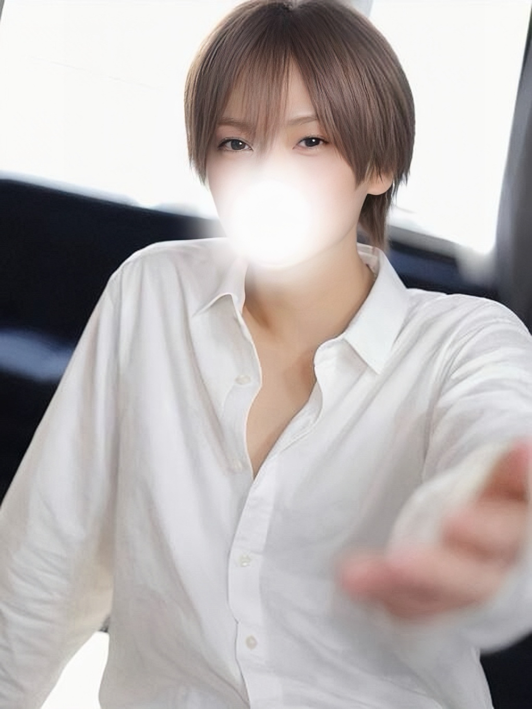

<title>Night Bloom Studio アートディレクション提案</title>
<link rel="preconnect" href="https://fonts.googleapis.com">
<link rel="preconnect" href="https://fonts.gstatic.com" crossorigin>
<link rel="stylesheet" href="https://fonts.googleapis.com/css2?family=Shippori+Mincho+B1:wght@500;700&family=Cormorant:ital,wght@0,400;0,500;1,400&family=Noto+Sans+JP:wght@400;500;700&family=Zen+Kaku+Gothic+New:wght@300;700&family=Archivo:wght@500;700&family=Bodoni+Moda:ital,wght@0,400;1,400&family=Noto+Serif+JP:wght@400;600&display=swap">
<style>
/* Layout: a design brief read top to bottom — ink on paper, one accent, generous measure */
:root{
  --bg:#F5F4F0; --bg-2:#ECEAE4; --fg:#121116; --fg-2:#5B5A62; --fg-3:#8F8E96; --line:rgba(18,17,22,.14);
  --accent:#6D5AD6; --accent-soft:#B9A9E6; --ok:#2E7D4F;
  --jp:'Shippori Mincho B1','Hiragino Mincho ProN',serif; --lat:'Cormorant',Georgia,serif; --body:'Noto Sans JP','Hiragino Kaku Gothic ProN',sans-serif;
}
@media (prefers-color-scheme: dark){ :root:not([data-theme="light"]){ --bg:#141317; --bg-2:#1E1D23; --fg:#F1EFEA; --fg-2:#B8B6BE; --fg-3:#827F8A; --line:rgba(241,239,234,.14); --accent:#B9A9E6; --accent-soft:#6D5AD6; color-scheme:dark } }
:root[data-theme="dark"]{ --bg:#141317; --bg-2:#1E1D23; --fg:#F1EFEA; --fg-2:#B8B6BE; --fg-3:#827F8A; --line:rgba(241,239,234,.14); --accent:#B9A9E6; --accent-soft:#6D5AD6; color-scheme:dark }
*{box-sizing:border-box}
body{margin:0;background:var(--bg);color:var(--fg);font-family:var(--body);font-size:15.5px;line-height:1.9;letter-spacing:.01em;padding-block:0 80px}
.wrap{width:min(100% - 40px,1040px);margin-inline:auto}
h1,h2,h3,p,ul,ol,figure,table{margin:0}
h1{font-family:var(--jp);font-weight:500;font-size:clamp(30px,4.6vw,46px);line-height:1.3;text-wrap:balance}
h2{font-family:var(--jp);font-weight:500;font-size:clamp(24px,3vw,32px);line-height:1.4;margin-top:12px;text-wrap:balance}
h3{font-weight:700;font-size:17px;line-height:1.6}
.kicker{font-family:var(--lat);font-style:italic;font-size:19px;color:var(--fg-3)}
.lead{color:var(--fg-2);max-width:38em;margin-top:14px}
header{padding:64px 0 40px;border-bottom:1px solid var(--line)}
header .meta{display:flex;flex-wrap:wrap;gap:8px 24px;margin-top:18px;font-size:12.5px;letter-spacing:.08em;color:var(--fg-3)}
section{padding:56px 0;border-bottom:1px solid var(--line)}
.n{font-family:var(--lat);font-size:15px;letter-spacing:.2em;color:var(--accent);text-transform:uppercase}
p+p{margin-top:12px}
.prose{max-width:38em}
ol.pri{list-style:none;padding:0;margin-top:28px;display:grid;gap:14px}
ol.pri li{display:grid;grid-template-columns:52px minmax(0,1fr);gap:16px;padding:18px 0;border-top:1px solid var(--line)}
ol.pri li b.num{font-family:var(--lat);font-size:30px;line-height:1;color:var(--fg-3)}
ol.pri li h3{margin-bottom:6px}
ol.pri li p{color:var(--fg-2);font-size:14.5px;max-width:44em}
.tag{display:inline-block;font-size:11px;letter-spacing:.12em;padding:2px 9px;border:1px solid var(--line);border-radius:999px;color:var(--fg-2);margin-left:8px;vertical-align:middle}
.tag.hi{border-color:var(--accent);color:var(--accent)}
/* direction cards */
.dirs{display:grid;grid-template-columns:repeat(3,minmax(0,1fr));gap:18px;margin-top:28px}
.dir{border:1px solid var(--line);padding:22px 22px 24px;background:var(--bg);display:flex;flex-direction:column;gap:16px;min-width:0;position:relative}
.dir.rec{border-color:var(--accent)}
.dir .rec-badge{position:absolute;top:-11px;left:18px;background:var(--accent);color:#fff;font-size:11px;letter-spacing:.16em;padding:3px 10px;border-radius:999px}
.dir h3{font-family:var(--jp);font-weight:500;font-size:22px}
.dir .one{color:var(--fg-2);font-size:13.5px;line-height:1.75}
.sw{display:flex;gap:6px}
.sw i{flex:1;height:34px;border:1px solid var(--line);display:block}
.sw i span{display:block;font-size:10px;letter-spacing:.04em;color:var(--fg-3);margin-top:36px;font-style:normal}
.type{border-top:1px solid var(--line);padding-top:12px;line-height:1.3}
.type .d{display:block;font-size:26px;line-height:1.25}
.type .l{display:block;font-size:20px;margin-top:4px}
.type .b{display:block;font-size:12.5px;color:var(--fg-2);margin-top:8px}
.wire{aspect-ratio:4/3;background:var(--bg-2);position:relative;border:1px solid var(--line)}
.wire i{position:absolute;background:var(--fg-3);opacity:.55}
.wire i.t{background:var(--fg);opacity:.9;height:4px}
.wire i.a{background:var(--accent);opacity:1}
.dl{font-size:13.5px;color:var(--fg-2);display:grid;grid-template-columns:auto 1fr;gap:4px 12px}
.dl dt{color:var(--fg-3);letter-spacing:.06em;font-size:12px;padding-top:3px}
.dl dd{margin:0}
.why{margin-top:28px;padding:22px 24px;border-left:3px solid var(--accent);background:var(--bg-2)}
.why h3{font-family:var(--jp);font-weight:500;font-size:20px}
.why ul{margin:10px 0 0 18px;color:var(--fg-2);font-size:14.5px}
/* mock figures */
.mocks{display:grid;grid-template-columns:minmax(0,2.4fr) minmax(0,1fr);gap:24px;margin-top:28px;align-items:start}
.mock{border:1px solid var(--line);background:var(--bg-2);overflow:hidden}
.mock img{width:100%;display:block}
.mock figcaption{font-size:12.5px;color:var(--fg-3);padding:10px 12px;border-top:1px solid var(--line);letter-spacing:.04em}
.full{margin-top:24px}
.full .mock{max-height:1100px;overflow:auto}
.btnrow{display:flex;flex-wrap:wrap;gap:12px;margin-top:22px}
.btn{display:inline-flex;align-items:center;min-height:44px;padding:0 20px;border-radius:999px;border:1px solid var(--fg);font-size:14px;font-weight:500}
.btn.primary{background:var(--fg);color:var(--bg)}
.spec{width:100%;border-collapse:collapse;margin-top:18px;font-size:14px}
.spec th,.spec td{text-align:left;padding:10px 12px 10px 0;border-bottom:1px solid var(--line);vertical-align:top}
.spec th{color:var(--fg-3);font-weight:500;font-size:12.5px;letter-spacing:.06em;width:26%}
.cols{display:grid;grid-template-columns:repeat(2,minmax(0,1fr));gap:28px 40px;margin-top:22px}
.cols h3{margin-bottom:8px}
.cols ul{margin:0 0 0 18px;color:var(--fg-2);font-size:14.5px}
.cols li+li{margin-top:6px}
.photos{display:grid;grid-template-columns:repeat(5,minmax(0,1fr));gap:12px;margin-top:22px}
.photos figure{min-width:0}
.photos img{width:100%;aspect-ratio:3/4;object-fit:cover;display:block;border:1px solid var(--line)}
.photos figcaption{font-size:12.5px;color:var(--fg-2);line-height:1.6;margin-top:8px}
.photos b{display:block;font-family:var(--lat);font-size:16px;color:var(--fg)}
.order{list-style:none;padding:0;margin-top:18px;display:grid;gap:8px}
.order li{display:grid;grid-template-columns:36px 180px minmax(0,1fr);gap:12px;padding:10px 0;border-bottom:1px solid var(--line);font-size:14.5px}
.order li b{font-family:var(--lat);color:var(--fg-3);font-size:18px}
.order li span{color:var(--fg-2)}
.order li em{font-style:normal;font-weight:500}
@media (max-width:760px){
  .wrap{width:min(100% - 32px,1040px)}
  .dirs,.mocks,.cols{grid-template-columns:1fr}
  .photos{grid-template-columns:repeat(2,minmax(0,1fr))}
  .order li{grid-template-columns:30px minmax(0,1fr)}
  .order li span{grid-column:2}
  ol.pri li{grid-template-columns:40px minmax(0,1fr)}
  .full .mock{max-height:none}
}
</style>

<header>
  <div class="wrap">
    <p class="kicker">Art direction proposal</p>
    <h1>Night Bloom Studio<br>写真が主役のサイトへ。</h1>
    <p class="lead">目的は、訪れた人が「ここなら自分をかっこよく撮ってもらえそう」と感じ、撮影事例を眺めたあとにLINEで相談すること。現状の改善点を優先度順に整理し、方向性を3案比較したうえで、おすすめ案のトップ画面と撮影事例セクションをPC・スマホの実寸モックで示します。</p>
    <div class="meta"><span>対象: https://nightbloom-studio.jp/</span><span>2026-10-15</span><span>料金・サービス・予約リンクは現行のまま</span></div>
  </div>
</header>

<section>
  <div class="wrap">
    <p class="n">01</p>
    <h2>現状の改善点（優先度順）</h2>
    <p class="lead">いまのサイトは情報として破綻はありません。足りないのは「写真を見た瞬間の説得力」と「ページに緩急をつける編集」です。上から順に効きます。</p>
    <ol class="pri">
      <li><b class="num">1</b><div><h3>写真の量と撮り分けが足りない <span class="tag hi">最優先</span></h3><p>使える写真が5枚で、ヒーローと撮影事例で同じ写真を使い回しています。構図はどれも「上半身・正面寄り・室内」で、全身・横位置・ディテール・後ろ姿がなく、作品集として並べたときの変化が出ません。顔を隠した写真はそのまま使う前提で、隠しても成立する構図（横顔のシルエット、手元、後ろ姿）を足すのが先決です。</p></div></li>
      <li><b class="num">2</b><div><h3>トップ画面が「写真＋テンプレ」の見え方になっている</h3><p>左に黒い面、右に写真という分割は安全ですが、人物のシルエットが画面の半分にしか使われていません。写真を全面に使い、文字を写真の上で組むことで、最初の1秒の世界観が変わります。</p></div></li>
      <li><b class="num">3</b><div><h3>セクションの形がすべて同じ</h3><p>「英字ラベル → 見出し → 均等グリッド」の繰り返しで、スクロールしても見せ場が来ません。写真の大小、余白の広狭、左右非対称を意図的に入れて、3〜4スクロールに1回は息をのむ場面をつくります。</p></div></li>
      <li><b class="num">4</b><div><h3>書体に「色気」がない</h3><p>Noto Sans JP ＋ Manrope は清潔で読みやすい反面、どの業種にも見える組み合わせです。見出しだけ明朝体（Shippori Mincho B1）と欧文のイタリック（Cormorant）に切り替え、本文は現行のゴシックを残すと、高級感と読みやすさが両立します。</p></div></li>
      <li><b class="num">5</b><div><h3>動きが「フェードイン」だけで役割がない</h3><p>スライダーのクロスフェードと全要素の同じフェードは、視線を導いていません。メイン写真のゆっくりしたズーム、見出しの行ごとの立ち上がり、写真ごとに速度を変えた控えめなパララックスの3つに絞ります。</p></div></li>
      <li><b class="num">6</b><div><h3>スマホで写真が重い</h3><p>写真は1枚700〜870KBのJPEGです。WebP化と長辺1600px化で1枚150KB前後になり、ヒーローの表示が体感で1秒以上速くなります。「動きを減らす」設定ではズームとパララックスを止めます。</p></div></li>
      <li><b class="num">7</b><div><h3>アクセントの紫が小さく散っている</h3><p>ラベル・番号・星にだけ使われ、ブランドとして記憶に残りません。使う場所を「罫線1本と小さなマーク」に絞り、代わりに黒・白・チャコールのコントラストで品を出します。</p></div></li>
    </ol>
  </div>
</section>

<section>
  <div class="wrap">
    <p class="n">02</p>
    <h2>デザインの方向性 3案</h2>
    <p class="lead">3案とも「都会的・色気・清潔感・大胆な構図・上品な躍動感」を狙いますが、重心の置き方が違います。</p>
    <div class="dirs">
      <article class="dir rec">
        <span class="rec-badge">おすすめ</span>
        <h3>A. Monochrome Editorial</h3>
        <p class="one">紙色の地に、写真を全面で使うファッション誌の見開き。黒・白・チャコールの3値と、紫は罫線1本だけ。色気は明朝体と写真のトリミングで出し、清潔感は紙色と余白で保つ。</p>
        <div class="sw"><i style="background:#F3F2EE"><span>paper</span></i><i style="background:#1E1D22"><span>charcoal</span></i><i style="background:#0F0E12"><span>ink</span></i><i style="background:#B9A9E6"><span>bloom</span></i></div>
        <div class="type"><span class="d" style="font-family:'Shippori Mincho B1',serif">魅せたい自分を、武器にする。</span><span class="l" style="font-family:'Cormorant',serif;font-style:italic">Selected works — Shibuya</span><span class="b">本文: Noto Sans JP 400 / 15.5px / 行間1.9</span></div>
        <div class="wire" aria-hidden="true"><i style="left:0;top:0;width:100%;height:58%;opacity:.3"></i><i class="t" style="left:6%;top:38%;width:46%"></i><i class="t" style="left:6%;top:46%;width:32%"></i><i style="left:6%;top:66%;width:50%;height:30%"></i><i style="left:60%;top:62%;width:34%;height:22%"></i><i class="a" style="left:60%;top:88%;width:14%;height:2px"></i></div>
        <dl class="dl"><dt>写真</dt><dd>ヒーロー全面。事例は12列グリッドの非対称レイアウト（大1・中2・小2）</dd><dt>動き</dt><dd>ヒーロー14秒のズーム、見出し行ごとの立ち上がり、写真ごとに速度を変えたパララックス</dd><dt>向き</dt><dd>写真が明るい室内中心の現状と相性がよい。清潔感が最も出る</dd></dl>
      </article>
      <article class="dir">
        <h3>B. Noir Gallery</h3>
        <p class="one">黒い壁に写真が浮かぶギャラリー。夜の仕事の世界観に最も近く、色気の表現が強い。文字は細いゴシックで静かに。</p>
        <div class="sw"><i style="background:#0A0A0B"><span>black</span></i><i style="background:#1C1B20"><span>charcoal</span></i><i style="background:#F2F1EC"><span>white</span></i><i style="background:#8E8A9A"><span>silver</span></i></div>
        <div class="type"><span class="d" style="font-family:'Zen Kaku Gothic New',sans-serif;font-weight:300">魅せたい自分を、武器にする。</span><span class="l" style="font-family:'Archivo',sans-serif;font-weight:500;letter-spacing:.14em;font-size:15px">SELECTED WORKS — SHIBUYA</span><span class="b">本文: Zen Kaku Gothic New 300 / 15px / 行間1.9</span></div>
        <div class="wire" aria-hidden="true" style="background:#15141a"><i style="left:22%;top:8%;width:56%;height:62%;opacity:.5"></i><i class="t" style="left:30%;top:76%;width:40%;background:#fff"></i><i class="t" style="left:36%;top:84%;width:28%;background:#fff;opacity:.6"></i></div>
        <dl class="dl"><dt>写真</dt><dd>ヒーローは中央配置の1枚。事例は横スクロールのフィルムストリップ</dd><dt>動き</dt><dd>クロスフェードと横方向のゆっくりしたパン。映画的</dd><dt>向き</dt><dd>黒背景の写真が増えれば強い。現状の明るい写真では浮く。旧サイトの黒に戻った印象になるリスク</dd></dl>
      </article>
      <article class="dir">
        <h3>C. White Lookbook</h3>
        <p class="one">純白の地に、太い罫線と大きな数字。アパレルのルックブックのように写真を2枚組で並べる。もっとも「清潔」で、もっとも静か。</p>
        <div class="sw"><i style="background:#FFFFFF"><span>white</span></i><i style="background:#111114"><span>ink</span></i><i style="background:#D9D9D6"><span>grey</span></i><i style="background:#5B3DF5"><span>violet</span></i></div>
        <div class="type"><span class="d" style="font-family:'Noto Serif JP',serif;font-weight:600">魅せたい自分を、武器にする。</span><span class="l" style="font-family:'Bodoni Moda',serif;font-style:italic">Look 01 — Shibuya</span><span class="b">本文: Noto Sans JP 400 / 15px / 行間1.8</span></div>
        <div class="wire" aria-hidden="true" style="background:#fff"><i style="left:6%;top:10%;width:40%;height:70%;opacity:.35"></i><i style="left:54%;top:22%;width:40%;height:58%;opacity:.35"></i><i class="t" style="left:6%;top:88%;width:24%"></i><i class="a" style="left:0;top:6%;width:100%;height:1px"></i></div>
        <dl class="dl"><dt>写真</dt><dd>ヒーローは左文字・右写真の分割。事例は2枚組＋大きな番号</dd><dt>動き</dt><dd>最小限。スクロールスナップと写真のフェードのみ</dd><dt>向き</dt><dd>上品だが冷たく、色気が出にくい。現行デザインと差が小さい</dd></dl>
      </article>
    </div>
    <div class="why">
      <h3>A案をすすめる理由</h3>
      <ul>
        <li>手元の写真（明るい室内・自然光）をそのまま活かせる。B案は黒背景の写真を撮り足すまで完成しない。</li>
        <li>「色気」を黒ではなく、明朝体・大胆なトリミング・余白で出せるので、清潔感と両立する。</li>
        <li>現行サイト（白・黒・紫）からの連続性があり、料金・FAQなどの下層セクションは構造を保ったまま衣替えできる。</li>
        <li>動きが少なくても成立する。止めた状態で雑誌の見開きとして美しいことを優先できる。</li>
      </ul>
    </div>
  </div>
</section>

<section>
  <div class="wrap">
    <p class="n">03</p>
    <h2>A案のデザイン — トップ画面</h2>
    <p class="lead">写真を全面に使い、人物の顔と首元に文字が重ならない位置にコピーを組みます。PCは左下、スマホは写真の下端にコピーを置き、顔は常に文字の外に出します。</p>
    <div class="mocks">
      <figure class="mock"><figcaption>PC 1440px — ファーストビュー</figcaption></figure>
      <figure class="mock"><figcaption>スマホ 390px — ファーストビュー</figcaption></figure>
    </div>
    <div class="btnrow"><a class="btn primary" href="mockup.html" target="_blank" rel="noopener">モックを実際に動かして見る</a><span style="font-size:13px;color:var(--fg-3);align-self:center">ブラウザ幅を変えるとPC／スマホのレイアウトが切り替わります</span></div>
    <table class="spec">
      <tr><th>写真のトリミング</th><td>PC: 横位置で人物を右寄り（object-position 62% 18%）に置き、左側に自然な暗部を残す。スマホ: 4:5で上寄せ（center 12%）、顔が画面上1/3に来るようにし、下1/3にだけ暗いグラデーションを敷く。</td></tr>
      <tr><th>キャッチコピー</th><td>「魅せたい自分を、／武器にする。」の2行固定。PC 92px、スマホ 42px、行間1.18、字間0.02em。1行目を長く、2行目を短くして右肩下がりのシルエットを作る。改行位置は画面幅で変えない。</td></tr>
      <tr><th>文字の読みやすさ</th><td>写真の左側に72%→0%の横グラデーション、スマホは下側に78%→0%の縦グラデーション。白文字＋薄い影は使わず、暗部の濃さだけで読ませる。</td></tr>
      <tr><th>副次情報</th><td>肩書きは欧文イタリック「Night Bloom Studio」＋小さな日本語。説明文は2〜3行に短縮。LINEボタンは緑のピル1つ、もう1つは下線付きの「View works」で事例へ誘導。</td></tr>
      <tr><th>動き</th><td>写真は14秒かけて1.06倍→1.0倍にゆっくり引く。コピーは行ごとに0.14秒ずらして下から立ち上がる。説明文とボタンは0.8秒後にフェード。縦書きの英字ラベルは紫の罫線1本を添える。</td></tr>
    </table>
  </div>
</section>

<section>
  <div class="wrap">
    <p class="n">04</p>
    <h2>A案のデザイン — 撮影事例</h2>
    <p class="lead">カードの繰り返しをやめ、12列のグリッドに写真を「大1・中2・小2」で非対称に配置します。写真の間に短いステートメントを1つだけ挟み、作品集の見開きとして読ませます。</p>
    <div class="mocks">
      <figure class="mock full-h"><figcaption>PC 1440px — トップから撮影事例まで</figcaption></figure>
      <figure class="mock"><figcaption>スマホ 390px — トップから撮影事例まで</figcaption></figure>
    </div>
    <table class="spec">
      <tr><th>並び順</th><td>01 黒い衣装の強い写真（大・4:5・左7列）→ 02 窓際の明るい写真（中・3:4・右4列、上を18%下げる）→ 03 廊下の横位置（中・4:3・右5列、下揃え）→ 04 自然光（小・3:4・2列目から4列）→ 05 ポートレート（中・5:6・右寄り）。濃い→明るい→濃いのリズムで目を上下させる。</td></tr>
      <tr><th>縦横比と間隔</th><td>4:5／3:4／4:3／5:6を混ぜ、同じ比率を隣り合わせない。間隔は14〜28px（画面幅2%）。写真の角丸はなし。</td></tr>
      <tr><th>キャプション</th><td>写真の左下に欧文イタリックで「No.01 — Studio, tungsten」。明るい写真は墨色、暗い写真は白。日本語の説明はつけない。</td></tr>
      <tr><th>ステートメント</th><td>グリッドの空きに1つだけ。「光と距離で、色気と清潔感を両立させる。」＋2行。紫の罫線40pxを添える。</td></tr>
      <tr><th>動き</th><td>写真ごとに-0.05〜+0.08の係数でパララックス（最大±8px）。ホバーで1.03倍に1.4秒かけてズーム。スクロールを止めても成立する配置を優先し、出現アニメーションは使わない。</td></tr>
      <tr><th>スマホ</th><td>6列グリッドに組み替え。01を全幅、02をステートメントと横並び、03を横位置の全幅、04・05を2列で高さをずらす。間隔12px。</td></tr>
    </table>
  </div>
</section>

<section>
  <div class="wrap">
    <p class="n">05</p>
    <h2>写真の評価と、撮り足したいカット</h2>
    <p class="lead">顔を隠した写真はそのまま使います。隠していても「かっこいい」と伝わる構図を足すことが、このサイトでは特に効きます。</p>
    <div class="photos">
      <figure><figcaption><b>01</b>黒・タングステン光・鎖。最も強い1枚。ヒーローと事例の起点に。</figcaption></figure>
      <figure><figcaption><b>02</b>窓際・座り。明るさと余裕があり、清潔感担当。</figcaption></figure>
      <figure><figcaption><b>03</b>廊下・斜め構図。横位置にトリミングすると動きが出る。</figcaption></figure>
      <figure><figcaption><b>04</b>自然光・白。02と役割が近く、小さく使う。</figcaption></figure>
      <figure><figcaption><b>05</b>白シャツ・正面。顔隠しの面積が大きく、締めの小サイズ向き。</figcaption></figure>
    </div>
    <div class="cols">
      <div><h3>撮り足したいカット（優先順）</h3><ul>
        <li><em>横位置の全身</em>（椅子・壁にもたれる）。ヒーローの横長に最適。顔は横向きのシルエットで隠しても成立。</li>
        <li><em>後ろ姿・肩越し</em>。顔を出さずに色気が出る。事例の「中」サイズ用。</li>
        <li><em>手元と首元のディテール</em>（時計・指輪・鎖）。事例の「小」サイズとステートメント横に。</li>
        <li><em>黒背景＋ハードライト</em>の1枚。コントラストの強い写真が1枚あると並びが締まる。</li>
        <li><em>スタジオの空間</em>（機材・窓・椅子）。「ここで撮る」が想像でき、Googleビジネスプロフィールにも流用できる。</li>
      </ul></div>
      <div><h3>書き出しの指定</h3><ul>
        <li>WebP、長辺1600px、品質80。ヒーロー用は横2000px。</li>
        <li>縦位置は4:5と3:4の両方で書き出す。横位置は3:2。</li>
        <li>ファイル名に番号と用途（hero-01-wide.webp など）。</li>
        <li>顔のぼかしは書き出し前の元データで処理し、ぼかし済みのみ納品。</li>
      </ul></div>
    </div>
  </div>
</section>

<section>
  <div class="wrap">
    <p class="n">06</p>
    <h2>色・文字・動きの共通ルール</h2>
    <div class="cols">
      <div><h3>色</h3><ul>
        <li>地: #F3F2EE（紙） ／ 面: #1E1D22（チャコール） ／ 文字: #0F0E12（墨）</li>
        <li>アクセント: #B9A9E6（bloom）。罫線1本、縦書きラベルの線、ステートメントの線にだけ使う。ボタンや見出しには使わない。</li>
        <li>LINEボタンのみ #06C755。ページ内で緑はここだけ。</li>
      </ul></div>
      <div><h3>文字</h3><ul>
        <li>見出し: Shippori Mincho B1 500。PC 92／60／34px、スマホ 42／34／24px。字間0.02em、行間1.18〜1.25。</li>
        <li>欧文: Cormorant イタリック 400。肩書き・キャプション・リンク。20〜22px。</li>
        <li>本文: Noto Sans JP 400、15.5px、行間1.9、字間0.01em、1行38字まで。太字は使わない。</li>
        <li>数字: Cormorant 500（料金・時間）。</li>
      </ul></div>
      <div><h3>動き</h3><ul>
        <li>ヒーロー: 14秒のズームアウト1回。ループしない。</li>
        <li>見出し: 行単位のマスク立ち上がり 1.1秒。ページで1回だけ。</li>
        <li>写真: パララックス最大±8px、係数は写真ごとに変える。ホバーで1.03倍。</li>
        <li>禁止: 全要素のフェードイン、点滅、スクロールジャック、自動スライド。</li>
        <li>prefers-reduced-motion: ズーム・立ち上がり・パララックスをすべて停止。</li>
      </ul></div>
      <div><h3>スマホ</h3><ul>
        <li>ヒーローは4:5、顔を上1/3に。コピーは写真の下端、説明文とLINEボタンは写真の直下のチャコール面に。</li>
        <li>基本情報の4項目は2×2のハイライン表。カードにしない。</li>
        <li>料金セクションに固定バーなしで到達できるよう、ヒーロー直下に「料金を見る」を置く。LINEバーはヒーロー通過後に表示。</li>
        <li>画像はWebP＋lazy、ヒーローのみ先読み。</li>
      </ul></div>
    </div>
  </div>
</section>

<section>
  <div class="wrap">
    <p class="n">07</p>
    <h2>文章と順番の整理案</h2>
    <p class="lead">事実情報はそのまま、順番を「写真 → 信頼 → 料金 → 手続き」に並べ替えます。変更の意図を添えます。</p>
    <ol class="order">
      <li><b>01</b><em>トップ（写真＋コピー）</em><span>世界観を1秒で伝える。説明文は2〜3行に短縮。</span></li>
      <li><b>02</b><em>基本情報（4項目）</em><span>料金・時間・駅・LINEを1行で。カードをやめ罫線のみ。</span></li>
      <li><b>03</b><em>撮影事例</em><span>現状より上へ。見てから信じてもらう。末尾に「撮影を相談する」。</span></li>
      <li><b>04</b><em>コンセプト（短く）</em><span>「写真が変われば、世界の見え方が変わる。」の1文＋3行。選ばれる理由と統合し、4項目を2項目に圧縮。</span></li>
      <li><b>05</b><em>料金・プラン</em><span>内容は現行のまま。黒いカード1枚とオプション表。</span></li>
      <li><b>06</b><em>撮影の流れ</em><span>4ステップは維持。1行ずつに短縮。</span></li>
      <li><b>07</b><em>お客様の声</em><span>3件のまま、新規追加なし。罫線区切り。</span></li>
      <li><b>08</b><em>よくある質問</em><span>7問のまま。</span></li>
      <li><b>09</b><em>アクセス＋LINE</em><span>最後にもう一度LINE。住所非公開の表記は維持。</span></li>
    </ol>
    <p class="prose" style="margin-top:22px;color:var(--fg-2)">撮影メニュー（用途一覧）は撮影事例のキャプションと料金セクションの一文に吸収し、独立セクションとしては外します。ページが短くなり、写真までの距離が縮まります。</p>
  </div>
</section>

<section style="border-bottom:0">
  <div class="wrap">
    <p class="n">08</p>
    <h2>次のステップ</h2>
    <ol class="order">
      <li><b>1</b><em>方向性の決定</em><span>A案で進めてよいか。B・C案の要素を混ぜたい場合はその箇所。</span></li>
      <li><b>2</b><em>写真の撮り足し</em><span>05の5カット。撮影前に構図のラフを渡せます。</span></li>
      <li><b>3</b><em>全ページ実装</em><span>モックをもとに、料金〜アクセスまでA案で組み、WordPressへ差し替え。</span></li>
      <li><b>4</b><em>画像の軽量化とSEOの再確認</em><span>WebP化、構造化データ、タイトル・OGPの更新。</span></li>
    </ol>
  </div>
</section>
